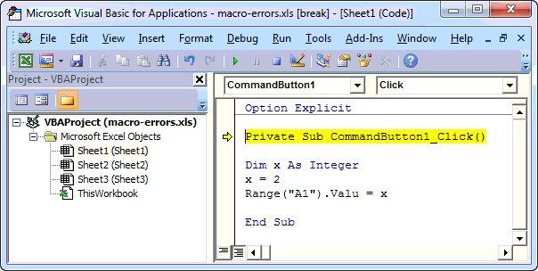
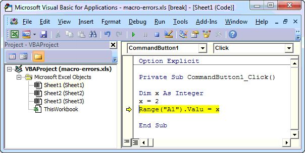
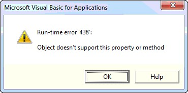
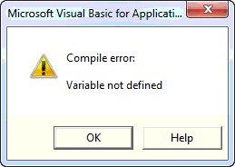
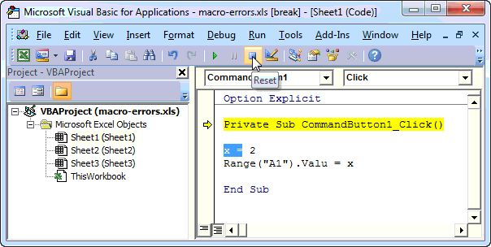

Mengatasi macro yang error
Pesan seperti 'Macros have been disabled' atau galat saat dijalankan biasanya disebabkan pengaturan keamanan atau kode yang salah.
Langkah praktik
- Buka File > Options > Trust Center > Trust Center Settings > Macro Settings.
- Pilih Disable all macros with notification agar muncul pilihan Enable Content saat file dibuka.
- Untuk galat dalam kode, klik Debug; baris bermasalah akan disorot kuning.
- Perbaiki baris tersebut lalu tekan F5 untuk melanjutkan atau tombol Reset untuk berhenti.
Tips
Hanya aktifkan macro dari file yang kamu percayai.
Tangkapan layar praktik




